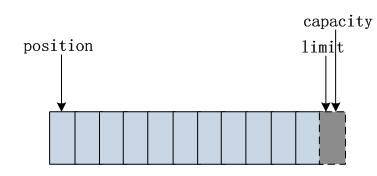

上一篇文章介绍了Java的传统I/O，也就是BIO（Blocking IO）。这篇文章介绍一下NIO（Non-Block）的基本知识点，以及为什么NIO在高并发以及大文件的处理方面更有优势。
本地文件I/O操作——NIO小试牛刀
Channel和Buffer
BIO里操作的是InputStream和OutputStream，在NIO中操作的则是Channel和Buffer。我们可以把Channel想象成矿藏，把Buffer想象成运矿的车。如果想移动数据，必须借助Buffer，这是移动数据的唯一方式。也就是说Buffer跟Channel必定形影不离。
NIO中用的最多的三种Channel，分别是FileChannel，SocketChannel，以及ServerSocketChannel。FileChannel是用来操作本地文件的，而另外两个则是进行网络I/O操作的。
FileChannel
这里通过将文件test-io.tmp里面的内容移动到文件test-io.md中，让大家感受一下如何使用Channel和Buffer进行文件I/O操作。
示例: NIO方式操作本地文件。1
2
3
4
5
6
7
8
9
10
11
12//通过FileInputstream拿到输入FileChannel。
FileChannel in = new FileInputStream("test-io.tmp").getChannel();
//通过FileOutPutStream拿到输出FileChannel
FileChannel out = new FileOutputStream("test-io.md").getChannel();
//创建一个字节缓冲器，用于运送数据。
ByteBuffer buffer = ByteBuffer.allocate(1024);
while (in.read(buffer) != -1){
//相当于缓冲器的开关，只有调用该方法，缓冲器里面的数据才能被写入到输出Channel.
buffer.flip();
out.write(buffer);
buffer.clear();
}
上面的代码很轻松的实现了，将文件test-io.tmp中的内容移动到test-io.md中。
代码解读
通过FileInputStream对象的getChannel方法拿到了Channel。
通过ByteBuffer的allocate方法（也可以是allocateDirecty方法）声明一个缓冲器，容量是1024字节，用于传输数据。
将数据源channel里面的数据通过read方法读取到缓冲器。
通过out.write()方法，将缓冲器里面的数据写入到输出Channel。最后清空缓冲器，为下次读取数据做准备。
注意：将缓冲区里面的数据写入到输出
channel前一定要调用buffer的flip（）方法。你可以把该方法的作用理解成，打开Buffer的阀门。只有打开阀门数据才能被取出。
ByteBuffer
ByteBuffer是Buffer的一个子类。还有很多其它子类，比如CharBuffer, DoubleBuffer等 ，ByteBuffer是用的最多的缓冲器。
我们可以把ByteBuffer想象成一个字节数组。大概是这个样子。

上图是刚刚初始化的示意图，position表示游标，每读取一个字节，position就移动一个位置。
ByteBuffer有几个比较重要的方法，如下
allocate(): 创建一个缓冲器，例如ByteBuffer.allocate(1024)。allocateDirect(): 创建一个与操作系统底层更耦合的缓冲器。capacity(): 返回缓冲区数组的容量。position(): 下一个要操作的元素位置。limit(): 返回limit的值。flip()：打开缓冲器的阀门，做好被读取的准备。put()：将字节存储进缓冲器。例如 byteBuffer.put("hello".getBytes("utf-8"));wrap()：将字节数组存储进缓冲器。例如 ByteBuffer.wrap("hello".getBytest())rewind()：将position设置为0。clear()：清空缓冲区。hasRemaining() 若介于position和limit之间有值，则返回true。
零拷贝
上面的例子还有另外一种实现，看代码。
1 | public class ChannelTransfer { |
直接将输入端和输出端进行对接，不经过操作系统的内核态。这就是大名鼎鼎的零拷贝技术的运用。Kafka的性能之所以那么生猛，很大一部分原因是运用了零拷贝技术。
超大内存文件读取
所谓超大文件就是，要操作的文件比你系统的可用内存还大，此时可以使用NIO提供的类库方法进行如下操作。1
2
3
4
5
6
7
8
9
10public static void main(String[] args) throws Exception {
FileChannel fileChannel = new FileInputStream("test-io.tmp").getChannel();
//通过map()方法产生一个缓冲器.
MappedByteBuffer mappedByteBuffer = fileChannel.map(FileChannel.MapMode.READ_ONLY, 0, fileChannel.size());
if (mappedByteBuffer != null){
CharBuffer charBuffer = Charset.forName("utf-8").decode(mappedByteBuffer);
System.out.println(charBuffer.toString());
}
}
注意map()函数有三个参数，分别表示读写模式，初始位置以及映射长度。 因为我的测试文件很小，所以就全部映射了。如果源文件较大(100G)可以每次映射500M或1G，根据机器性能不同找到一个最优值。
FileChannel的知识点基本就这些了,相信通过上面的介绍，各位对NIO的Channel和Buffer已经有了一个基本的认识。
网络I/O——NIO大显身手。
我们一直在说NIO是非阻塞I/O，但是上面介绍的FileChanel并不能设置成非阻塞模式，你说搞笑不。FileChannel相比于传统的（BIO）来说，最大的优势在于大文件的处理，以及零拷贝等技术的运用和处理。如果你问我这些技术的底层实现原理是什么，其实我也不知道，只知道FileChannel提供的很多方法，以一种更迎合操作系统的方式来工作。所谓马屁拍的好，升职加薪来的早。
如果各位真想深究底层原理，建议先去了解操作系统的知识，然后再去扒JDK的源码。
真正支持非阻塞操作的是ServerSocketChannel和SocketChannel。也只有在进行网络I/O的时候，非阻塞I/O的优势才能被最大程度的发挥出来。
如果想了解各种I/O的详细内容可以看我这篇文章。
需求提出
假设我们要实现一个简单的服务端程序，唯一的功能是接收客户端发过来的请求，然后将请求内容转换为大写之后在发回给客户端。
BIO实现方式
当客户端发送一个请求的时候，服务端则创建一个线程进行处理。当客户端同时发送100个请求的时候，服务端就创建100个线程进行处理。这看起来还不错，但如果请求数量有几千或者更高的时候，那么服务端可能就会有点儿吃不消了。
原因如下：
- 线程的创建和销毁很占用系统资源，即便有线程池技术，也不能从根本上解决问题，而且在Linux里面线程就是轻量级进程
- 线程不可以无限制的创建下去，Java里面每个线程要占用512K-1M的内存空间。
- 线程间的不断切换很消耗系统资源，因为要保留上下文等内容。
BIO是个实在孩子。
BIO选择多线程的方式也是无奈之选。因为Socket.write和Socket.read都是阻塞的。所谓的阻塞的意思就是一旦线程开始执行socket.read操作了，那么就需要等这个读操作执行完成。如果这个时候没有数据可以读，那么就需要等待，等到有数为止。这是BIO的天然属性，没有办法，简直太实在了。所以如果想充分的利用CPU，就得多创建几个线程，一个线程没有数据，另外一个总有吧，这就叫东方不亮西方亮。
来一段简简单单的伪代码，大家稍微感受一下吧。
1 | //整个线程池 |
NIO是个聪明孩子。
BIO的问题出在了阻塞的读和写上面。因为阻塞I/O太实在，没有数据就死等数据，造成CPU没有被充分利用的尴尬局面。相比于BIO，NIO就聪明多，因为它根本就不会等，而是有数据的时候，你通知我一下，我派CPU去取。到哪儿就取，取完就走，一点儿不废话，速度那叫一个快。以CPU的（智商）运算速度，一个人管理几千个通道根本不是事儿。这就是Reactor编程模型，也叫基于事件编程。
既然是基于事件编程，那么NIO里面比较重要的几个事件分别是，Read，Write，Accept，Connect。
在NIO编程模型中，每个客户端跟服务端建立的连接都是一个Channel，这些Channel一旦有数据了，就会通知CPU去对应的通道取数。所以根本不会像BIO那样，发生线程死等数据的情况。这也就是CPU利用高的原因。
NIO的网络编程模型有点儿类似于孙悟空的悬丝诊脉。
使用NIO进行网络编程
上面提到了，NIO网络编程是基于事件编程，那么就得有人负责事件的监听。这个工作由Select完成。当有感兴趣的事情发生，Select就会第一时间知道。
SelectionKey也是一个相当重要的角色，相当于Select和Channel沟通的桥梁。因为Select不光要知道有感兴趣的事情发生了，还要知道哪个Channel发生了什么事件。
NIO网络编程里面的主角就给大家都介绍完了，分别是选择器Selector，通道 ServerSocketChannel和SocketChanel，以及在上面提到的缓冲器ByteBuffer，还有SelectionKey。
下面给大家简单演绎一下，如何用NIO的方式，实现上文中提到的那个服务端程序。先看代码吧。1
2
3
4
5
6
7
8
9
10
11
12
13
14
15
16
17
18
19
20
21
22
23
24
25
26
27
28
29
30
31
32
33
34
35
36
37
38
39
40
41
42
43
44
45
46
47
48
49
50
51
52
53
54
55
56
57
58
59
60
61
62
63public class EchoNioServer {
public static final int BUF_SIZE = 1024;
public static void main(String[] args) {
ByteBuffer byteBuffer = ByteBuffer.allocate(BUF_SIZE);
try {
Selector selector = Selector.open();
ServerSocketChannel serverSocketChannel = ServerSocketChannel.open();
serverSocketChannel.configureBlocking(false);
serverSocketChannel.bind(new InetSocketAddress(8888));
System.out.println("正在8888端口监听...");
serverSocketChannel.register(selector, SelectionKey.OP_ACCEPT, byteBuffer);
while (true) {
selector.select();
Iterator<SelectionKey> iterator = selector.selectedKeys().iterator();
while (iterator.hasNext()) {
SelectionKey key = iterator.next();
iterator.remove();
if (!key.isValid()) {
continue;
}
if (key.isAcceptable()) {
ServerSocketChannel serverSocketChannel1 = (ServerSocketChannel) key.channel();
SocketChannel socketChannel = serverSocketChannel1.accept();
socketChannel.configureBlocking(false);
socketChannel.register(selector, SelectionKey.OP_READ, byteBuffer);
} else if (key.isReadable()) {
SocketChannel socketChannel = (SocketChannel) key.channel();
ByteBuffer readBuffer = (ByteBuffer) key.attachment();
readBuffer.clear();
socketChannel.read(readBuffer);
readBuffer.flip();
System.out.println("received from client: " + new String(readBuffer.array()).trim());
socketChannel.register(selector, SelectionKey.OP_WRITE, readBuffer);
} else if (key.isWritable()) {
SocketChannel socketChannel = (SocketChannel) key.channel();
ByteBuffer writeBuffer = (ByteBuffer) key.attachment();
String msg = new String(writeBuffer.array()).trim().toUpperCase();
writeBuffer.clear();
writeBuffer.put(msg.getBytes("utf-8"));
writeBuffer.flip();
socketChannel.write(writeBuffer);
writeBuffer.clear();
socketChannel.close();
}
}
}
} catch (IOException e) {
e.printStackTrace();
}
}
}
代码解读
帮大家做个简单的解读。方便大家理解。
- 先创建一个选择器及缓冲器备用，一个用于监听感兴趣的事件，一个用于运送数据。
Selector select = Selector.open();ByteBuffer byteBuffer = ByteBuffer.allocate(1024); - 创建一个
ServerSocketChannel ServerSocketChannel ssc = ServerSocketChannel.open(); - 设置为非阻塞模式（必须设置为非阻塞，不然你还是什么NIO）
ssc.configureBlocking(false) - 绑定端口
ssc.bind(8888) - 将通道注册到选择器，并告诉选择器，我对哪些些事件感兴趣。当事件到来就调用相应的逻辑进行处理。
sss.register(select,SelectionKey.Accept) - 调用
select.selct()方法，找出可用的通道，这个方法是阻塞的，所以放到while（true）也不会造成CPU空转。 - 针对不同的事件做不同的处理。
与上面服务端代码配套的客户端代码，我就不做过多解释了。
1 | public class EchoNioClient { |
结束
希望这篇文章能帮助你更好的理解NIO基础编程。了解了这些基础知识之后，无聊的时候就可以去看看Tomcat的源码，有机会也可以跟那些经常用Netty写高性能网关服务的大牛聊聊天了。
最后强烈建议各位，把文中的例子放到自己的IDE里面，跑一遍，最好自己在动手写一写，千万不要一看我都会，一写就蒙圈，眼高手低可不好。
推荐阅读:
1.这也许就是产品和开发互撕的本质原因吧
2.Apache httpd 是如何实现高并发服务的
3.Javaer运维指令合集(快餐版)